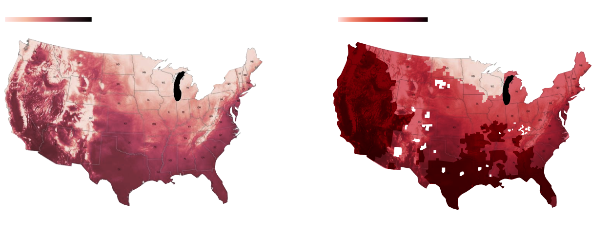

urban innovative temperature adjustment system
issue anchoring

This project addresses the increasing risk of extreme urban heat driven by climate change, where prolonged high temperatures are expected to impact over 100 million people across the United States within the next few decades. The goal of the system is to shift urban heat management from passive mitigation to active, responsive environmental control. To achieve this, the project proposes a distributed “solar umbrella” system that regulates solar radiation at the urban scale. Inspired by coral reef protection strategies, the system uses grating-based surfaces and thermal insulation materials to selectively control the angle and wavelength of incoming light, reducing heat accumulation in targeted areas. Beyond physical intervention, the system integrates sensing and monitoring technologies—including environmental data collection, signal transmission, and spatial scanning—to identify heat-intensive zones and dynamically adjust cooling responses. By combining material-based climate control with real-time environmental feedback, the system creates an adaptive urban cooling network that improves thermal comfort and reduces heat-related risks in high-density city environments.
Assumption use flow

The system operates through a centralized control platform that integrates environmental sensing, device deployment, and real-time monitoring, thereby providing a rapid-response urban cooling service. There are two mechanisms for triggering cooling demand: the system can be automatically activated based on preset environmental thresholds, or it can be manually initiated by operators at the central control platform. By analyzing spatial and environmental data, the system identifies areas in need of cooling and then launches “sunshade” devices to the designated locations. Once deployed, the cooling panels automatically unfold to absorb and reflect solar energy, thereby reducing the thermal energy that reaches the city. At the same time, each device performs localized spatial scanning, collecting real-time data on environmental conditions and surface heat distribution in the cooled area. The collected data is processed through an “image-sound-image” data conversion workflow, transforming environmental information into a different yet clearly perceptible sensory representation, which enhances both the depth and breadth of monitoring. The processed data is visualized on the platform, enabling operators to track cooling performance and environmental changes in real time. Based on continuous feedback, the system dynamically adjusts the placement and deployment strategies of the devices, forming a closed-loop operational process. This mechanism not only significantly improves operational efficiency but also achieves adaptive, data-driven regulation of the urban climate.
smart management system
The centralized control platform functions as the core of the system, integrating environmental data, spatial analysis, and device coordination into a unified operational interface. It continuously collects data from environmental sensors, spatial scans, and deployed devices, and processes this information to identify heat-critical zones and prioritize intervention areas. Based on these insights, the platform dynamically dispatches cooling devices and adjusts their deployment in response to changing conditions. Through real-time visualization and feedback, the platform enables operators to monitor system performance, evaluate cooling effectiveness, and make informed decisions.

Particle-Fluid Analysis: AI Calculation of Fluffy Accumulation Points
The system implements a cross-modal data translation workflow that converts spatial information into audio signals and reconstructs it into visual outputs. Environmental images captured via spatial scanning are encoded as binary data and transformed into sound via sonification and digital signal modulation techniques. These audio signals are transmitted to ground-based receivers, where they are decoded and reconstructed into images. This process is conceptually aligned with remote sensing and radar imaging systems, in which signals are translated into spatial representations, as well as with data transmission methods used in space communication. By continuously cycling through this image-audio-image pipeline, the system enables real-time visualization of temperature changes and cooling effects, allowing environmental dynamics to be monitored through both spatial and temporal patterns.


A functional prototype was developed to simulate the device's deployment behavior and data transmission workflow within the system. The prototype integrates a Raspberry Pi as the central control unit, coordinating signal reception, actuation, and data processing. Upon receiving a trigger signal, the system activates a set of servo motors to control the opening and closing of the device's functional panels, simulating the physical deployment of the “solar umbrella” structure. In parallel, the prototype demonstrates the data translation process by encoding binary information into both visual and audio outputs. LED indicators represent binary signals as light patterns, while an audio module converts the same data into sound via a buzzer. A GPS module provides basic location awareness, allowing the system to associate incoming signals with spatial positioning. The integrated audio input/output module supports signal reception and playback, completing the loop of data encoding, transmission, and reconstruction. The prototype focuses on validating the system logic rather than the final form, emphasizing the interaction among signal processing, mechanical response, and data feedback.